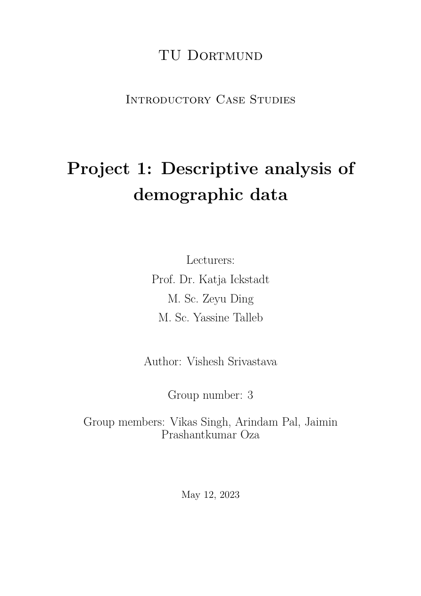
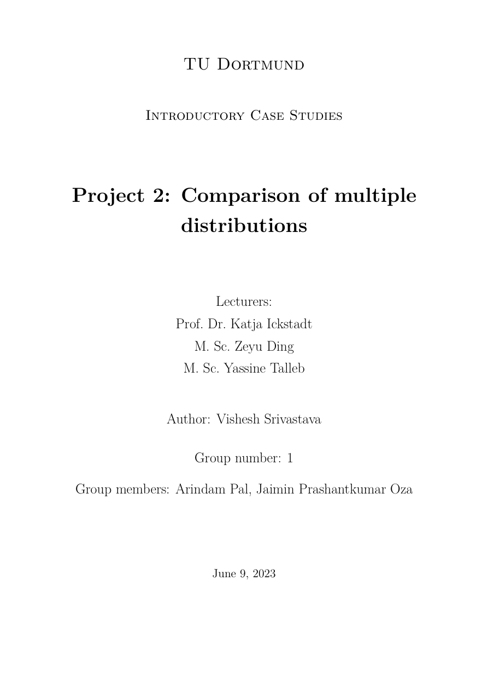
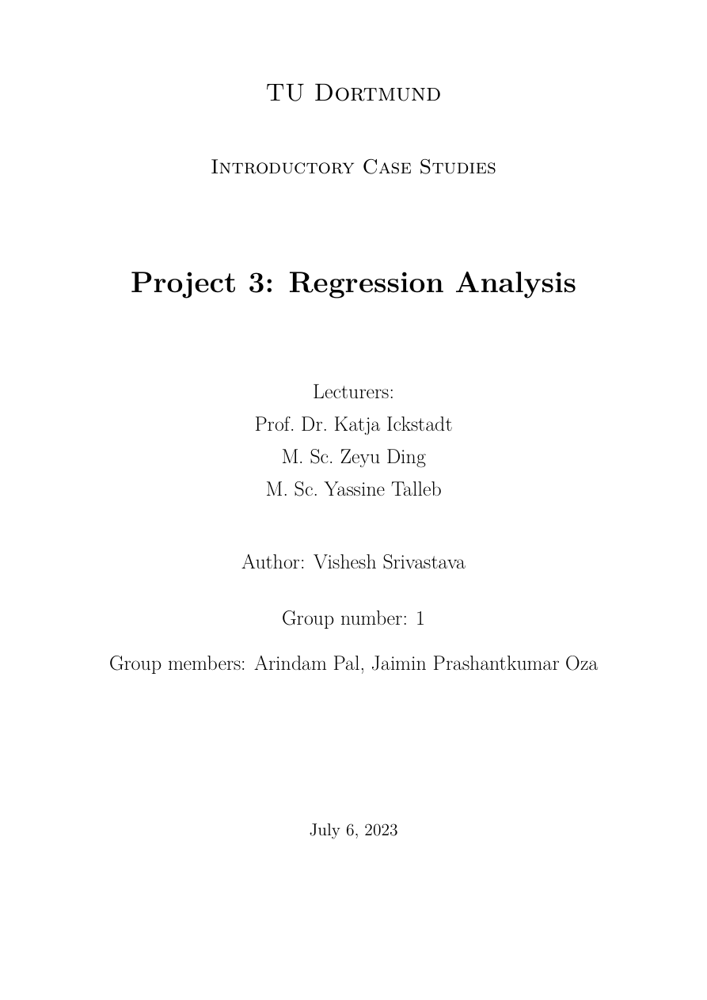

Demographic Data Analysis
Descriptive and visual analysis of global life expectancy and under-age-5 mortality. Explores patterns across world regions and tracks trends over time using summary statistics and ggplot2 visualizations.
Statistical Analysis · TU Dortmund
Three end-to-end data analysis projects in R — from exploratory analysis and hypothesis testing to linear regression and model diagnostics.

Descriptive and visual analysis of global life expectancy and under-age-5 mortality. Explores patterns across world regions and tracks trends over time using summary statistics and ggplot2 visualizations.

Investigates the effect of maternal smoking on infant birth weight. Applies one-way ANOVA, Kruskal-Wallis tests, and pairwise comparisons with Bonferroni and Tukey corrections to draw statistically rigorous conclusions.

Builds and evaluates a linear regression model to predict hourly bike rental counts in Seoul. Covers variable selection, multicollinearity (VIF), residual diagnostics, Box-Cox transformation, and influential point analysis.